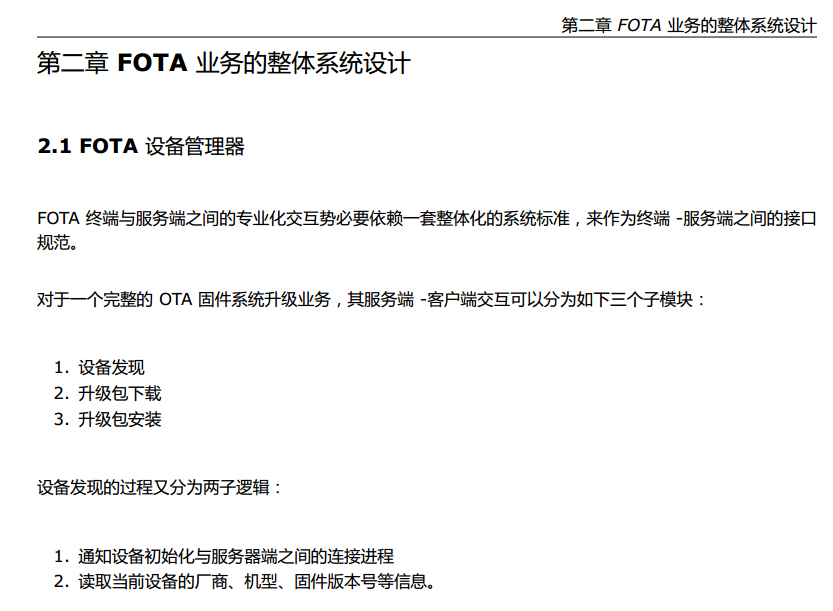
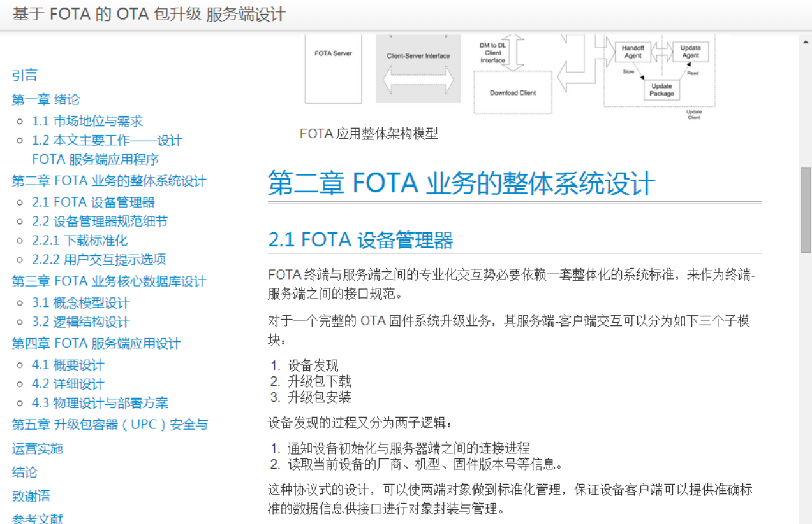

Markdown + GIT
开源项目中的文档管理
李颖豪
GIT 工作流
现状背景
GITHUB 开源项目合作
Fork --> Spoon --> Knife
Makrdown 哲学
Markdown 是針對易於與閱讀的目標而設計的，特別是在易於閱讀這點上尤為重要
John Gruber
一份 Markdown 格式的文件應該要能以純文字形式直接發表，並且一眼看過去不存在任何標記用的標籤或格式指令。
快速进入
Markdown


Markdown 文档项目托管 GIT 文档并发合作产出
Pull, 关系型解耦， 高频数据 内存读取 彻底提升数据存储速度。